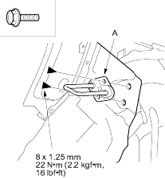
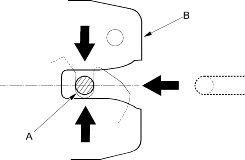
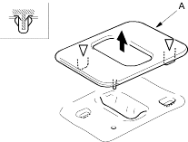
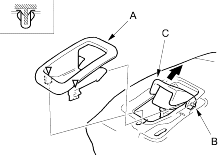

- Remove the trunk side trim panel (see page 20-208).
- Remove the bolts, then remove the seat-back striker (A).
Fastener Locations  : Bolt, 2
: Bolt, 2

- Install the striker in the reverse order of removal and move the striker (A) up or down until it is centred in the seat-back latch (B).

- Take care not to tear the seams or damage the seat covers.
- Put on gloves to protect your hands.
- Remove the seat-back (see page 20-237).
- Remove the headrest.
- On right seat-back: If equipped, remove the armrest (see page 20-238).
- Pull up the latch cover (A) to release the clips, then remove it.
Fastener Locations  : Clip, 2
: Clip, 2

- Pull up the outside edge of the latch lever cover (A) to release the clips and release the cover from the pivot pins (B) of the latch lever (C) while pulling the latch lever.
Fastener Locations : Clip, 2
